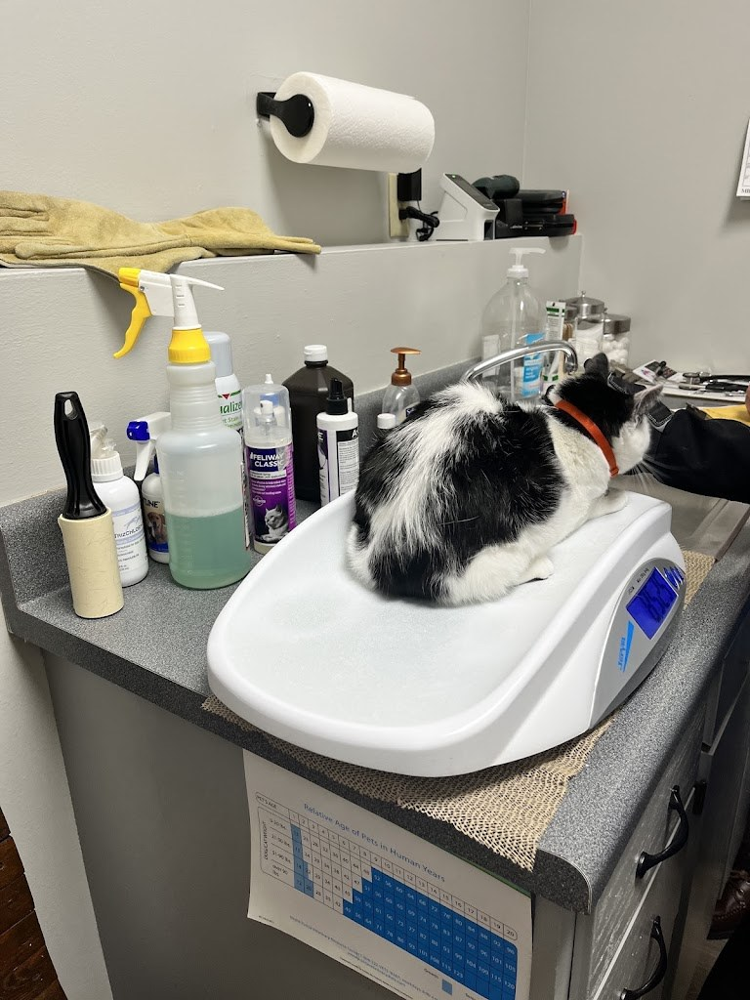
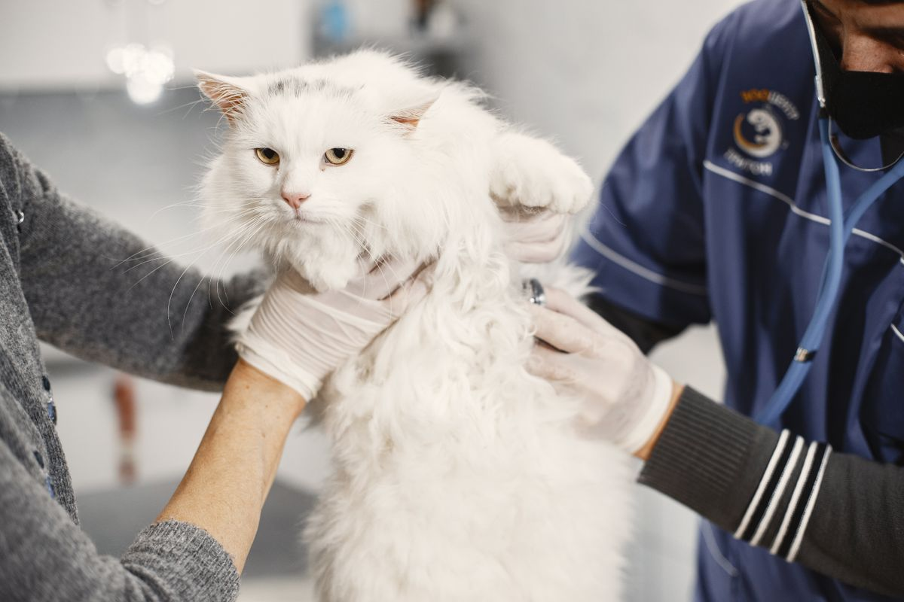
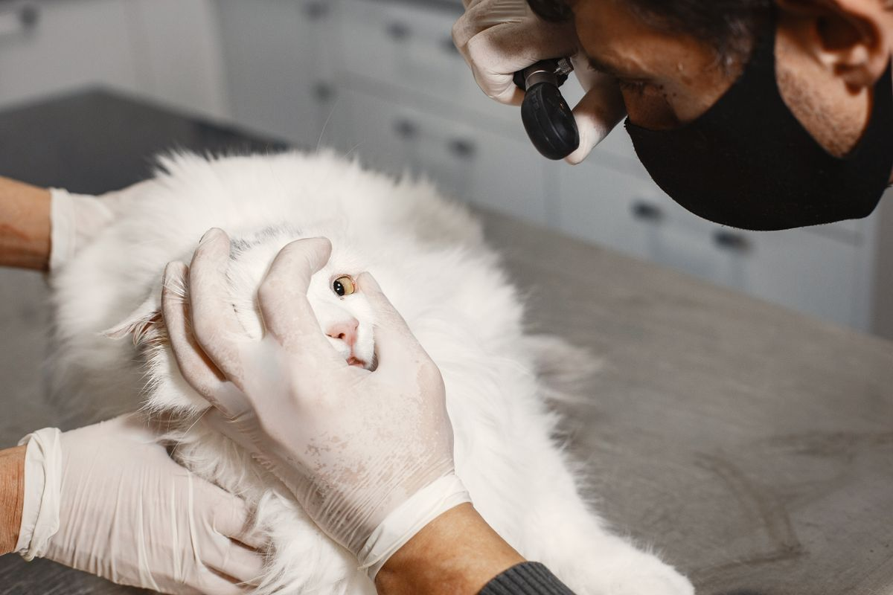

Feline veterinary care at City Cat Clinic Inc
A feline-only veterinary clinic near Forest Park, with Dr. Scott Nieberg, DVM.
01
Regular check-ups
02
Spay and neuter
03
Veterinary dentistry
04
Boarding
05
Animal microchipping
Gallery



The hero photo is the clinic's real photo of a cat on the veterinary scale. The two gallery photos are stock photos, labeled as such. They show a veterinarian examining a cat, not this clinic.
Contact
City Cat Clinic Inc serves St. Louis, MO. Questions? Call (314) 652-1919.